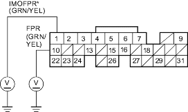
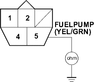

- Reinstall the PGM-FI main relay 2.
- Turn the ignition switch ON (II).
- Measure voltage between ECM/PCM connector terminal E10 (E1*) and body ground.
ECM/PCM CONNECTOR E (31P)

Wire side of female terminals
Is there battery voltage?
YES - Go to step 12.
NO - Replace the PGM-FI main relay 2. 
- Turn the ignition switch OFF.
- Reconnect ECM/PCM connector E (31P).
- Turn the ignition switch ON (II) and measure voltage between ECM/PCM connector terminal E10 (E1*) and body ground within the first 2 seconds after the ignition switch was turned ON (II).
ECM/PCM CONNECTOR E (31P)
Wire side of female terminals
Is there battery voltage?
YES - Substitute a known-good ECM/PCM and recheck. If symptom/indication goes away, replace the original ECM/PCM.
NO - Go to step 15.
- Turn the ignition switch OFF.
- Remove the rear seat cushion, refer to the '01 Civic Shop Manual on this CD (see page 20-237).
- Remove the access panel from the floor.
- Measure voltage between the fuel pump 5P connector terminal No. 5 and body ground within the first 2 seconds after the ignition switch was turned ON (II).
FUEL PUMP 5P CONNECTOR

Wire side of female terminals
Is there battery voltage?
YES - Go to step 24.
NO - Go to step 19.
- Turn the ignition switch OFF.
- Remove the PGM-FI main relay 2.